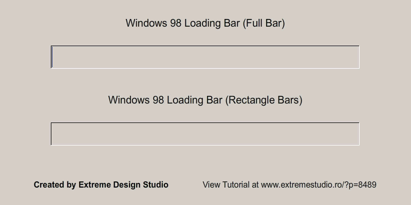

Loading Spinners
Loading Bar
The history of the loading spinner starts with looking at the loading bar. The loading bar was the precursor to the spinner, and was implemented in even the beginning of terminal computer use. The main difference between a loading bar and a loading spinner, is the bar features the ability to let the user know how much progression has happened in the loading process.

Arguably,the other parent of the loading spinner is the (x),